Customer Favorite!
Osaka, Kyoto, & Nara
RecommendedSightseeing Courses Curated
by Our Staff👇 Click each image to check the detailed route
Osaka
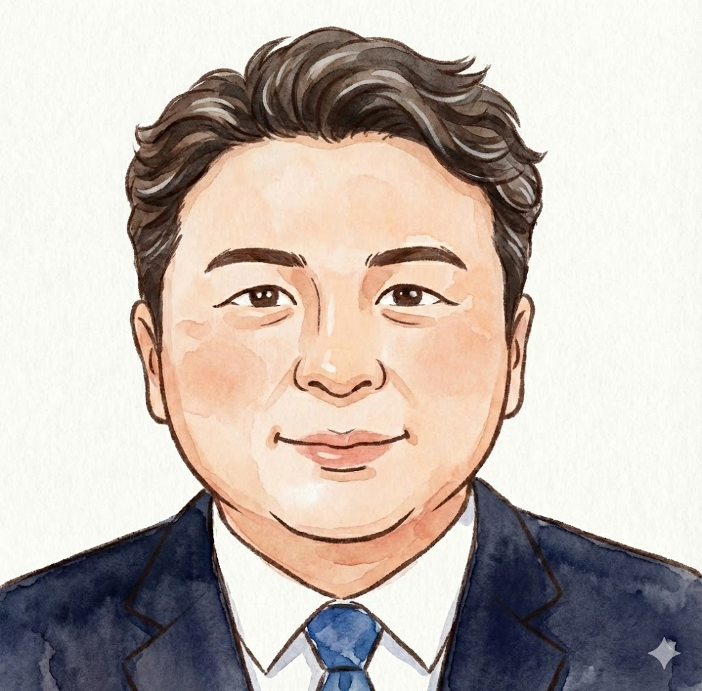
Nakayama (Fluent in English)
京都
Kim (Fluent in Korean)
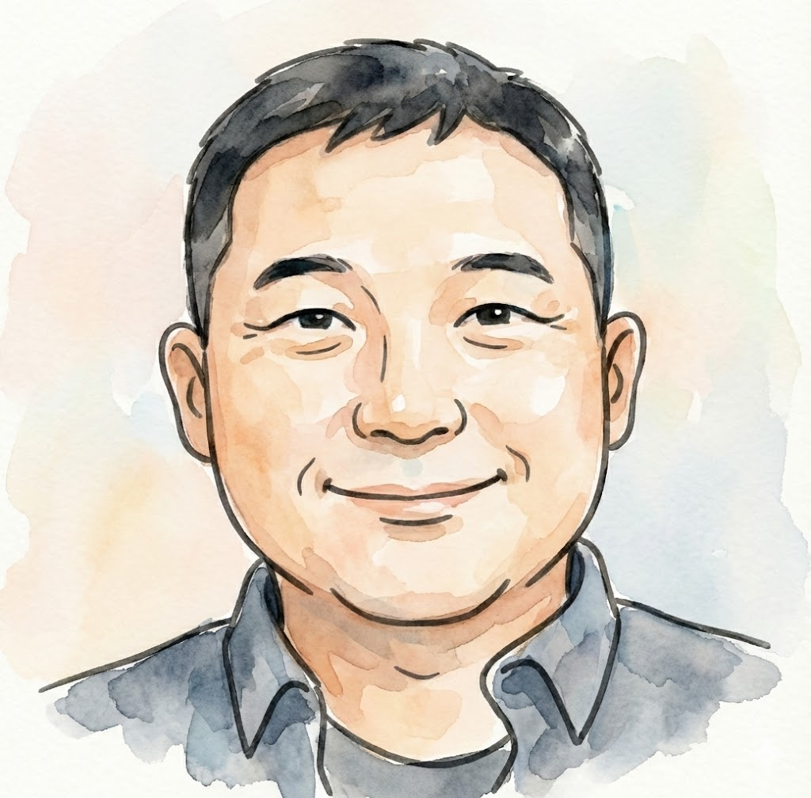
Nara
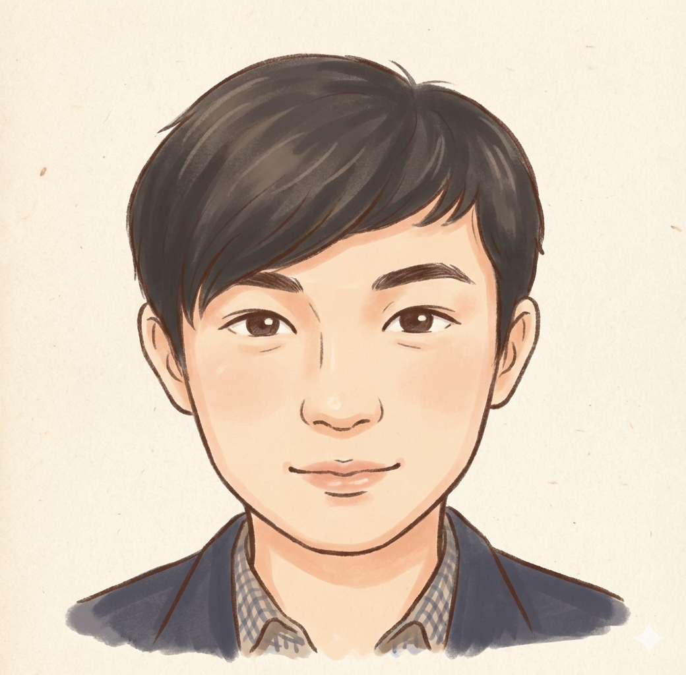
Wang (Born in China, Raised in Japan)
one day in
Osaka
9:00 AM Pickup
(Hotel or Designated Location)
(Hotel or Designated Location)
9:30 AM - 11:30 AM Osaka Castle Park
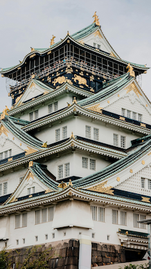
Luxurious! Step into Hideyoshi's Golden World.
 The vibrant symbol of old-school Osaka!
The vibrant symbol of old-school Osaka!
11:30 AM - 2:30 PM Tsutenkaku & Shinsekai
2:30 PM - 3:00 PM Shitennoji Temple
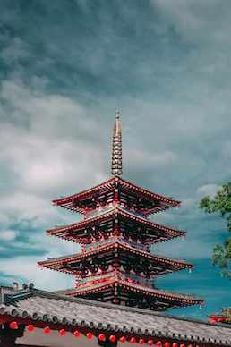
Japan’s first state-administered Buddhist temple.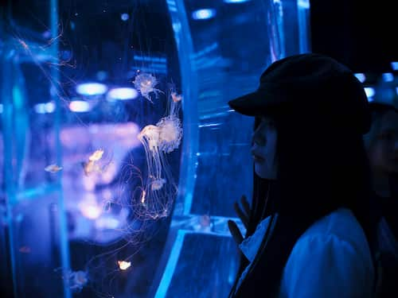
Take a relaxing break at the on-site cafe.
3:30 PM - 5:30 PM Kaiyukan Aquarium
6:00 PM - 7:00 PM Dotonbori & Shinsaibashi

 Osaka is simply incredible!
Osaka is simply incredible!
19:00 PM~ Drop-off at your hotel
Welcome to Osaka!
I’ll share with you the "hidden culinary gems" known only to locals—places where you can enjoy incredible food without waiting in line.
I’ll also guide you through the best routes to avoid traffic and maximize your time.
I’ll share with you the "hidden culinary gems" known only to locals—places where you can enjoy incredible food without waiting in line.
I’ll also guide you through the best routes to avoid traffic and maximize your time.
one day in
Kyoto
9:00 AM - 10:30 AM
Meeting & Travel to Kyoto
Meeting & Travel to Kyoto

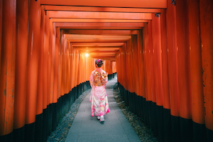
A Kimono experience is a must!Enjoy effortless travel by chauffeur.
10:30 AM - 12:00 PM Fushimi Inari Taisha
12:20 PM - 3:00 PM Kiyomizu-dera Temple
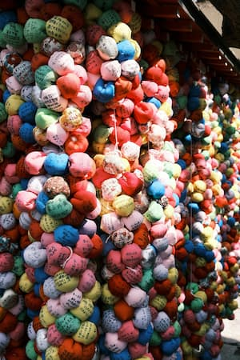
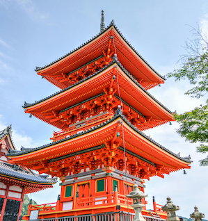
Ninenzaka & Sannenzaka SlopesSo many charming shops to explore!
 The Golden Pavilion's presence is breathtaking,
The Golden Pavilion's presence is breathtaking,no matter how many times you visit!
3:40 PM - 4:40 PM Kinkaku-ji (The Golden Pavilion)
5:20 PM - 6:00 PM Gion & Hanamikoji Street
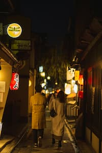
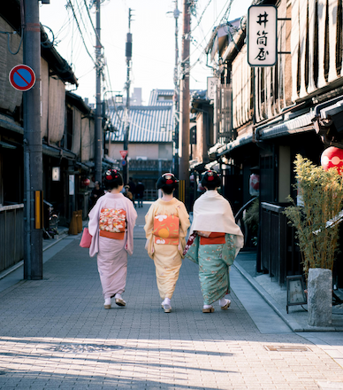
A paradise for shopping and gourmet dining!
one day in
Nara
9:00 AM Pickup
(Hotel or Designated Location)
(Hotel or Designated Location)

 A moment where time stands still...
A moment where time stands still...
10:00 AM - 11:00 AM Toshodaiji Temple
11:30 AM - 3:30 PM
Nara Park & Todai-ji Temple
Nara Park & Todai-ji Temple
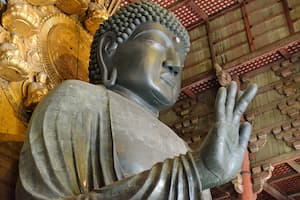
 Plenty of delicious local eateries!
Plenty of delicious local eateries!
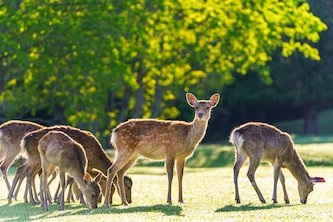
Watch out when feeding the deer crackers!They can be quite enthusiastic!
3:40 PM - 4:30 PM Kasuga Taisha Shrine
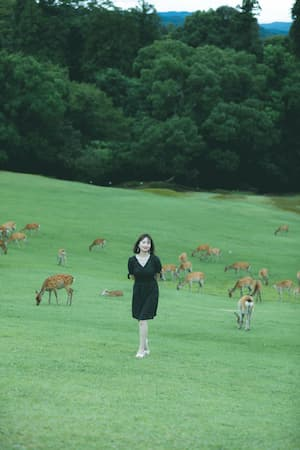
Panoramic views of Nara City.
5:00 PM - 5:40 PM Mt. Wakakusa

Contact Us
お問い合わせはこちらから